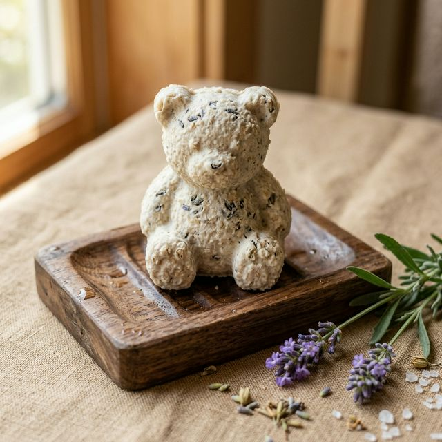
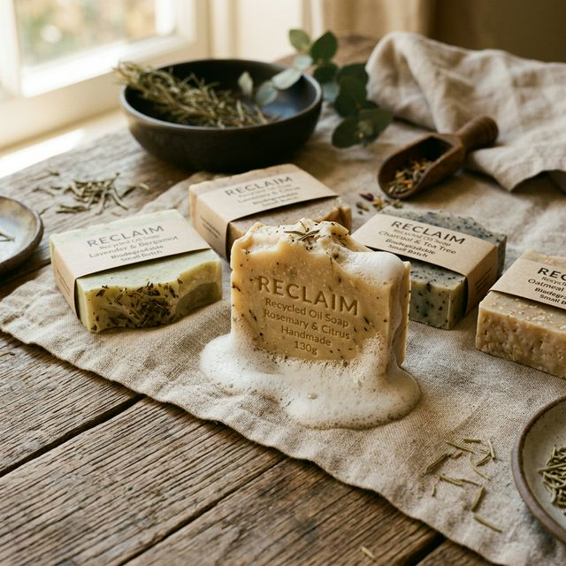

NATUFRESH FACTORY S.A.S.
"Del aceite denso a la espuma pura"
Transformamos aceites de cocina usados en jabón ecológico en barra 100% biodegradable. Innovación ambiental con saponificación controlada para un planeta más limpio y saludable.


¿Qué vendemos?
NatuFresh Factory produce y comercializa jabón ecológico para manos en barra biodegradable, formulado mediante el procesamiento, neutralización y saponificación controlada de aceite de cocina usado.
Transformamos un residuo altamente contaminante en un jabón de manos eficiente, inocuo y seguro para todo tipo de piel.
-
✓Formulación Inocua: Sin químicos ni aditivos sintéticos agresivos.
-
✓Limpieza Suave: Espuma abundante que limpia sin resecar la piel.
-
✓100% Biodegradable: Se descompone sin contaminar fuentes de agua.
Así cuidamos el planeta
Descubre paso a paso cómo transformamos el aceite de cocina usado en jabón ecológico biodegradable, con un proceso pensado para proteger las fuentes de agua y reducir el impacto ambiental en cada barra que producimos.
-
✓Trazabilidad total: Del aceite usado a la barra terminada.
-
✓Cero desperdicio: Reincorporamos un residuo contaminante a la economía circular.
¿A quién nos dirigimos?
Nuestro mercado está dirigido al público en general de Bogotá D.C., personas y hogares con conciencia ambiental y compromiso con la sostenibilidad.
Asimismo, impulsamos un fuerte canal B2B orientado a tiendas ecológicas, comercios de productos naturales, distribuidores sostenibles y el sector HORECA (Hoteles, Restaurantes y Catering) que buscan insumos de aseo verde certificados.


¿Cómo queremos ser percibidos?
Como un proyecto de innovación social y ambiental fundamentado rigurosamente en el modelo de Economía Circular (Ley 2234 de 2022).
Somos percibidos como una marca técnica, transparente, confiable y accesible, capaz de demostrar que los productos sostenibles pueden ofrecer máxima eficacia sin costar más.
¿Qué diferenciador ofrecemos?
Tres pilares fundamentales respaldan la propuesta de valor única de NatuFresh Factory.
Diferenciador Ambiental
Mitigación directa de la contaminación hídrica. Transformamos un residuo peligroso en un insumo biodegradable que protege las fuentes de agua.
Diferenciador Técnico
Proceso estandarizado en 8 etapas de saponificación controlada, asegurando neutralización de olores, pH equilibrado y máxima seguridad de uso.
Diferenciador Económico
Insumo de higiene de alto rendimiento a precio competitivo, permitiendo el acceso masivo a la limpieza ecológica en Bogotá.
Eco-Friendly Bear Soap
Conoce nuestras presentaciones artesanales biodegradables elaboradas con compromiso ambiental.
Eco-Friendly Bear Soap
Diseño emblemático en forma de oso, formulado para lavado delicado e higiénico.
 Empaque Eco
Empaque Eco
Empaque Artesanal Kraft
Caja de cartón reciclable con etiqueta biodegradante y cordón natural de yute.

Barra MultiusoJabón en Barra Tradicional
Máxima duración y espuma abundante para limpieza profunda de textiles y superficies.
Fórmula Neutra
Jabón HORECA & Hogar
Insumo inocuo de alto rendimiento formulado para comercios y uso doméstico.
Lo que dicen quienes ya nos probaron
Clientes reales compartiendo su experiencia con el jabón ecológico NatuFresh Factory.
Testimonio de cliente #1
Una clienta comparte su experiencia usando el jabón ecológico en su rutina diaria.
Testimonio de cliente #2
Más clientes cuentan por qué eligieron NatuFresh Factory para el aseo del hogar.
Un cliente lo recomienda
Conoce por qué nuestros clientes recomiendan el jabón NatuFresh a familiares y amigos.
Calificación del producto
Así califican nuestros clientes la calidad y el desempeño del jabón ecológico.
¿Preguntas o cotizaciones?
Estamos listos para atender tus dudas sobre nuestro proceso de saponificación, alianzas B2B, compras al por mayor o recepción de aceite vegetal usado.
natufreshfactory@gmail.com📍 Bogotá D.C., Colombia | Atención a clientes y comercios